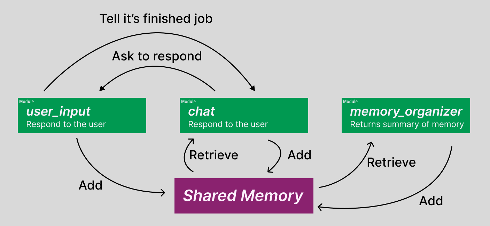

3. Creating Modules (CoMA Interface)
Building Your First Modules
In this section, we'll create three simple modules that demonstrate the core concepts of CoMA modules. These modules will work together to build a simple chat application that responds to user input.
We'll create the following modules:
user_input: Receives user input and sends it to thechatmodulechat: Receives messages from theuser_inputmodule and responds to the usermemory_organizer: Organizes the agent's memory in the background

Setting Up Your Project
Create the Project Structure
First, create a directory for your project and agent:
Create Your First Module File
Create a file named user_input.py in the my_project/agent1 directory:
Creating the User Input Module
Open user_input.py in your text editor and add the following code:
# my_project/agent1/user_input.py
import time
import concurrent_modular_agent as coma
@coma.module_main('user_input')
def mod_user_input(agent: coma.AgentInterface):
while True: # continuously run this module
m = input("User: ")
if len(m) == 0 or m.isspace() or m is None: # if the user input is empty, skip to the next iteration
continue
agent.state.add(f"user_message:{m}")
agent.message.send("chat", "reply to user") # send message to the "chat" module
time.sleep(3) # wait for 3 seconds before next input
This module continuously receives user input. When a user enters a message, it:
1. Adds the message to the agent's state (shared memory)
2. Sends a message to the chat module to generate a reply
Understanding the Module Code
Let's examine the key components:
Module Declaration:
The@coma.module_main(module_name) decorator creates an AgentInterface object with the specified module name. This object provides access to state management and messaging functionality.
Continuous Operation:
This loop keeps the module running continuously, with a 3-second delay between inputs to prevent overwhelming the user.Input Handling:
The module captures user input and skips empty or whitespace-only entries.State Management:
The state is a shared memory space where modules store and retrieve information. Here, we add the user's message with auser_message: prefix.
Inter-Module Communication:
This sends a message to thechat module, triggering it to generate a response.
Creating the Chat Module
Create the chat module file:
Add the following code to chat.py:
# my_project/agent1/chat.py
import concurrent_modular_agent as coma
from openai import OpenAI
@coma.module_main('chat')
def mod_response_to_user(agent: coma.AgentInterface):
openai_client = OpenAI()
while True:
m = agent.message.receive()
if m is None:
continue # If no message is received, skip to the next iteration
messages = [
{"role": "developer", "content": "You are a module of an autonomous agent. Your job is to respond to the user's input. You are expected to talk with the user. You are not an AI assistant, so feel free to talk freely. You do not need to help humans. You received the following messages from the user, other modules. Talk to the user in a natural way."},
]
for s in agent.state.get(max_count=10).texts[::-1]:
if s.startswith("user_message:"):
messages.append({"role": "user", "content": s[len("user_message:"):]})
elif s.startswith("assistant_message:"):
messages.append({"role": "assistant", "content": s[len("assistant_message:"):]})
messages.append({"role": "assistant", "content": f"{m}"})
completion = openai_client.chat.completions.create(
model="gpt-4o",
messages=messages,
)
output_message = completion.choices[0].message.content
print(f'ChatBot: {output_message}')
agent.state.add(f"assistant_message:{output_message}")
agent.message.send("user_input", 'chat response finished')
Understanding the Chat Module
Message-Driven Activation:
The module waits for messages from other modules (likeuser_input) before activating.
LLM Integration:
openai_client = OpenAI()
completion = openai_client.chat.completions.create(
model="gpt-4o",
messages=messages,
)
State Retrieval:
for s in agent.state.get(max_count=10).texts[::-1]:
if s.startswith("user_message:"):
messages.append({"role": "user", "content": s[len("user_message:"):]})
elif s.startswith("assistant_message:"):
messages.append({"role": "assistant", "content": s[len("assistant_message:"):]})
Response Output:
output_message = completion.choices[0].message.content
print(f'ChatBot: {output_message}')
agent.state.add(f"assistant_message:{output_message}")
Creating the Memory Organizer Module
Create the memory organizer file:
Add the following code:
# my_project/agent1/memory_organizer.py
import time
import random
import concurrent_modular_agent as coma
from openai import OpenAI
@coma.module_main('memory_organizer')
def mod_organize_memory(agent: coma.AgentInterface):
openai_client = OpenAI()
while True:
time.sleep(100) # Wait for 100 seconds between memory organization cycles
messages = [
{"role": "developer", "content": "You are a module of an autonomous agent. Your job is to organize the memory of the agent. You are expected to organize the memory of the agent in a way that is helpful to recall the past and what the agent had thought. You will be given a list of memory entries from the user and other modules."},
]
organizing_range = random.randint(5, 10) # Randomly decide how many messages to organize
recent_states = agent.state.get(max_count=organizing_range).texts[-organizing_range:]
for s in recent_states:
if s.startswith("user_message:"):
messages.append({"role": "user", "content": s[len("user_message:"):]})
elif s.startswith("assistant_message:"):
messages.append({"role": "assistant", "content": s[len("assistant_message:"):]})
completion = openai_client.chat.completions.create(
model="gpt-4o-mini",
messages=messages,
)
output_message = completion.choices[0].message.content
agent.state.add(f'memory_summary:{output_message}')
Understanding the Memory Organizer
Background Operation:
This module runs independently in the background, periodically organizing the agent's memory.Random Memory Selection:
organizing_range = random.randint(5, 10)
recent_states = agent.state.get(max_count=organizing_range).texts[::-1]
Concurrent Operation:
The memory_organizer module runs concurrently with the other modules. While user_input and chat modules interact directly with each other, the memory organizer works independently to maintain and organize the agent's memory in the background.
Next Steps
Now that you've created your three modules, you're ready to run your first CoMA agent! Continue to the next section to learn how to execute your agent and see it in action.